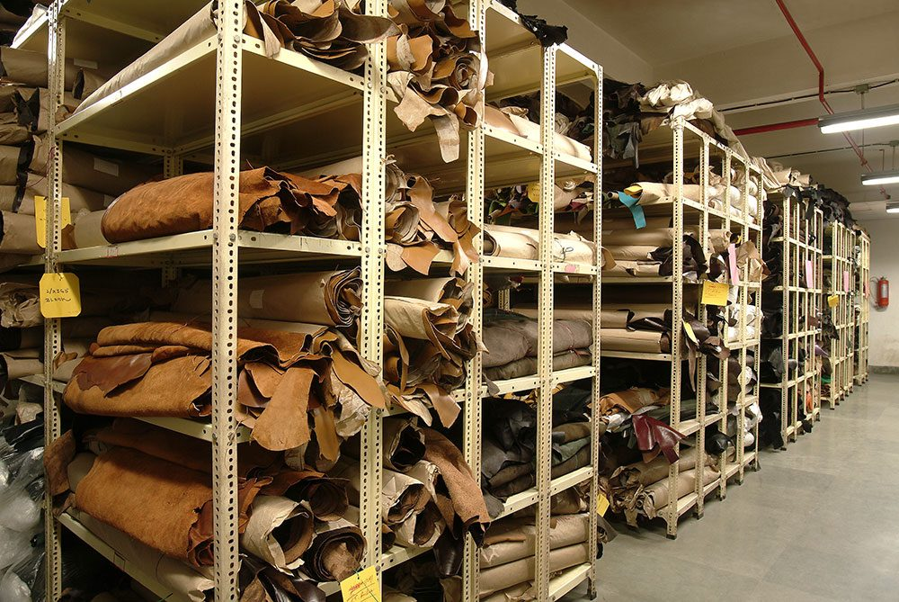
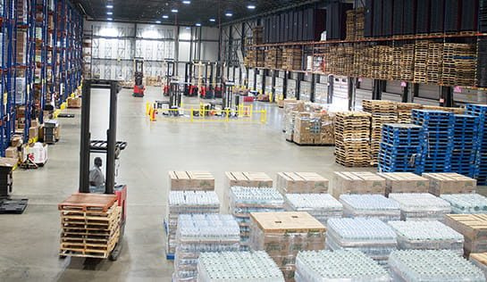
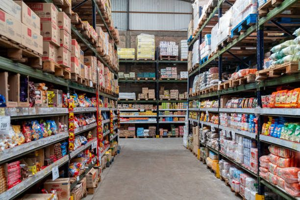
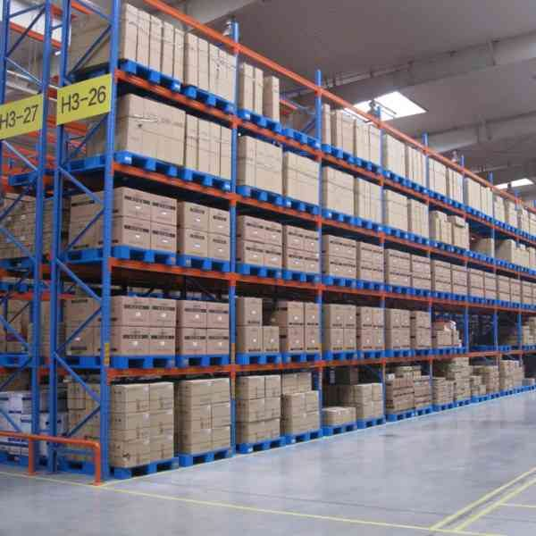

Every case below is work our team led inside a real business. Client names are withheld under confidentiality, but the industries, scale and outcomes are exact — and references from the managers we reported to are available on request.
Client: A national footwear & leather manufacturer
Scope: Full warehouse relocation

The problem. The company needed to move an entire warehouse holding roughly 8,000 active SKUs. A relocation of that size usually means weeks of blind inventory — stock physically in transit while the ERP still shows it on a shelf that no longer exists. Damage, shrinkage and permanent write-offs follow.
What we did. Every SKU was mapped to a destination bin before a single pallet moved. Items were sequenced by movement class so fast-movers landed first and stayed pickable. Each batch was re-verified against the ERP as it was received at the new site, so the system and the floor never diverged by more than one batch at a time. Handling instructions were issued per material type to protect fragile leather and finished goods.
The result. The relocation completed with under 0.5% damage and loss across the whole move — against an industry norm that runs several times higher — and inventory records stayed reconcilable throughout.
Client: A venture-backed grocery delivery platform
Scope: Greenfield central warehouse design & launch

The problem. Nine city warehouses were each ordering fast-moving SKUs independently. That meant duplicated purchasing, inconsistent stock levels, and no single point of truth for what the network actually held.
What we did. Designed and launched a central warehouse to supply all nine sites — layout, racking, storage classification and inbound/outbound flow from scratch. Built the transfer-order and inter-site-transfer process so stock movement between depot and marts was recorded rather than assumed, and set up the inventory liquidation route for slow and dead stock. During the network build-out we executed a single relocation of 192,000 items inside five days.
The result. One controlled source feeding nine sites, with transfers, credit notes and returns all landing in the system instead of on a WhatsApp thread.
Client: A national QSR franchise operator
Scope: FIFO & expiry control, GRN and vendor returns

The problem. Fresh inventory was being rotated by memory. Expiry losses were absorbed as a cost of doing business, and rejected supplier stock had no clean route back to the vendor — so it sat, aged, and was eventually written off twice: once as stock, once as a bad supplier relationship.
What we did. Introduced system-enforced expiry dating on fresh items so rotation stopped depending on whoever was on shift. Implemented FIFO across the operation to 100% compliance. Restructured SKU sizing to carton/kit level inside Dynamics 365 so system units matched how stock was physically handled. Built supplier GRN analysis with a defined return-to-vendor path for QC rejections, per SOP.
The result. Expiry loss moved from an accepted cost line to a tracked, controllable one — and rejected stock started going back to vendors instead of quietly becoming the operator's loss.
Client: A venture-backed grocery delivery platform
Scope: Fulfilment accuracy & throughput

The problem. Order volume was climbing toward 900 a day. At that rate a 2% pick error is roughly 18 wrong deliveries daily — each one a refund, a re-ship, and a customer who doesn't come back.
What we did. Rebuilt the picking and packing process around verification at each handoff, set a hard order-processing target of five minutes, and put physical counts on a cycle that reconciled against the system rather than replacing it. Bin layout was reorganised so pick paths matched actual demand frequency. Daily shift progress reports were reviewed and fed straight back into the next day's operation.
The result. 100% picking and packing accuracy sustained at 800–900 orders per day, with orders processed inside the five-minute target.
Client: A leading leather export house
Scope: Product costing & margin analysis
| Cost component | Basis | Per unit |
|---|---|---|
| Raw material — hide | 1.4 sq ft | $8.40 |
| Raw material — lining & sole | per unit | $3.15 |
| Direct labour — cutting & stitching | 42 min | $4.62 |
| Direct labour — finishing | 11 min | $1.21 |
| Factory overhead (allocated) | machine hr | $2.08 |
| Wastage allowance | 3.2% | $0.62 |
| True cost per unit | $20.08 |
The problem. Pricing was being set off material cost plus a blanket margin. Labour was estimated, overhead wasn't allocated at all, and nobody could say which product lines were genuinely profitable at the volumes being run.
What we did. Built a full cost model from the ground up: material, direct labour, and indirect cost, with overhead allocated on a defensible basis rather than spread evenly. Calculated true per-unit cost by line, ran cost-versus-actual variance against production output, and rebuilt the selling price from cost upward instead of from the market downward.
The result. A working Excel cost model the business owns and re-runs itself as material prices move — and a clear, per-line view of which products carry the margin and which were quietly subsidised by the rest.
Direct references from directors and department heads at the businesses above.
[ REVIEW #1 — pending. Ask specifically about: stock accuracy, the relocation, and reliability under deadline. ]
[ REVIEW #2 — pending. Ask specifically about: warehouse setup, team management, and process improvement. ]
[ REVIEW #3 — pending. Costing / bookkeeping side. Ask about: accuracy of the cost model and quality of reporting. ]
Start with the free health check. You'll get a written findings note whether you hire us or not.